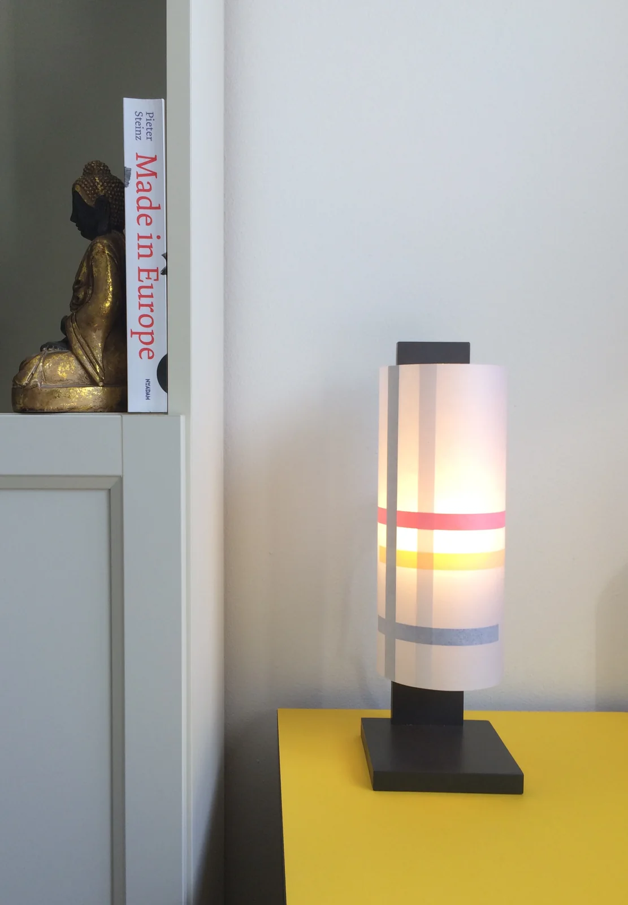

- Afmetingen
- Nog te bepalen
- Kleurstelling
- Primair (rood, geel, blauw) of grijstinten
- Papier
- Effen Japans papier, zonder vezel
- Prijs
- Op aanvraag
Tafellamp · De Stijl
Tafellamp met een compositie van horizontale kleurbanen op Japans papier, op een zwart houten voet.
